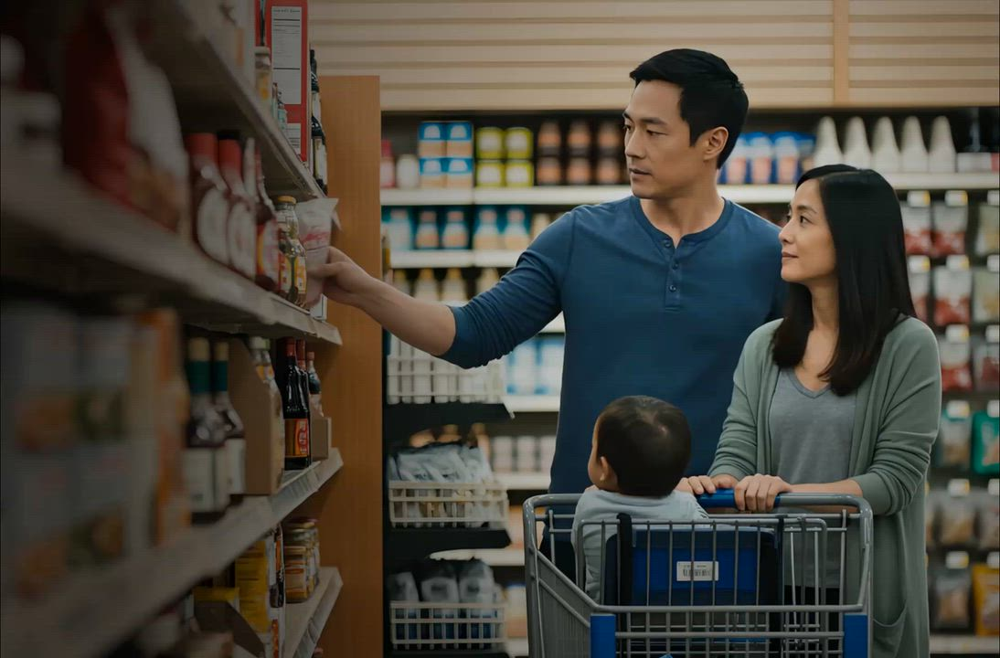

Nutrition scientists
Researchers who study how foods and their ingredients affect the body, and who ground our scoring in current nutritional evidence.
WISEalliance™ is our community of independent scientists, researchers and clinicians from around the world. They validate how WISE classifies and scores the foods we scan — so every verdict you see is backed by real expertise, not just an algorithm.
WISE scans hundreds of thousands of foods and evaluates thousands of attributes on each one. WISEalliance™ is the human layer that keeps that work honest: a standing community of experts who review our methods, challenge our conclusions, and confirm that a WISE result reflects the best available science.

No single discipline can capture the full truth about a food. The alliance brings together the specialists who, together, can.
Researchers who study how foods and their ingredients affect the body, and who ground our scoring in current nutritional evidence.
Experts in how food is made and processed — the people who can tell industrial transformation from a whole-food ingredient.
Specialists who assess ingredient safety and exposure, reinforcing the GRAS Reviewed layer beneath the Non-UPF standard.
Doctors and registered dietitians who see the real-world impact of diet, keeping our guidance grounded in patient outcomes.
Population-level experts who connect what's in the food supply to how communities actually eat and live.
Specialists who trace ingredients back to the source, so a verdict accounts for where and how food is really produced.
Every food WISE scans passes through a loop where expert judgment and machine analysis check each other.
Our engine evaluates thousands of attributes per product against the NFP+™ standard, producing a UPF classification and an ingredient-level breakdown.
Alliance members scrutinize how we reach a verdict — the criteria, the thresholds, the evidence — and push back where the science says we should.
Their input is folded back into the NFP+™ standard and our scoring, so a correction improves every future result, not just one product.
As new research lands, the alliance keeps our methods up to date — a WISE verdict reflects today's evidence, not a fixed snapshot.
Anyone can publish a score. What makes a WISE verdict worth trusting is that independent experts have stood behind the method that produced it. The alliance is how we make our science checkable rather than something you simply take on faith — so brands can stand behind their labels and shoppers never have to settle for "trust us."
The community's work touches everything WISE scans — here's the reach of that validation.
WISEalliance™ is always growing. If you study food, nutrition, safety or health and want to help make the truth about what we eat transparent and checkable, we'd love to have you review the science alongside us.